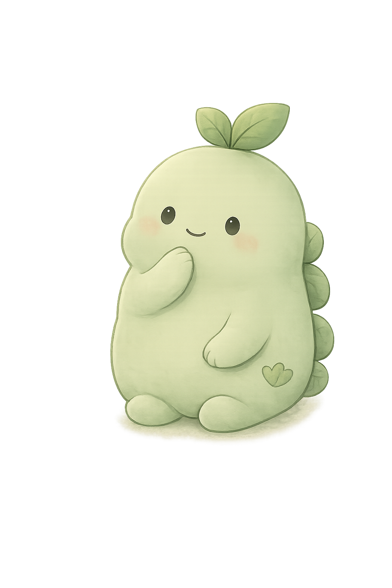
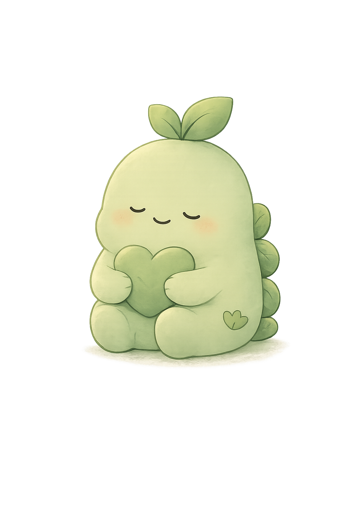

날짜별 기록
날짜, 시간, 장소, 있었던 일을 남길 수 있어요.
혼자 기억하려 애쓰지 않아도 되도록, 필요한 내용을 차분히 남기고 정리해요.
날짜, 시간, 장소, 있었던 일을 남길 수 있어요.
무서움, 불안, 억울함, 잠을 못 잔 것, 손 떨림 같은 반응도 함께 남길 수 있어요.
반복되는 장소, 사람, 감정, 몸의 반응을 정리해서 보여줘요.
보호자, 상담자, 선생님에게 보여줄 수 있는 요약문을 만들어요.
기록은 서버로 전송되지 않고, 기기 브라우저 안에만 저장돼요.
한 번에 많은 질문을 보지 않아도 돼요. 한 단계씩, 기억나는 만큼만 적어요.

날짜와 시간, 장소를 남겨요.
천천히 떠올려도 괜찮아.

기억나는 방식대로 적어요.
완벽하게 쓰지 않아도 돼.
감정과 몸의 반응도 함께 살펴요.
네 마음도 함께 적어도 괜찮아.
도움이나 보여주고 싶은 사람을 생각해요.
지금 필요한 걸 생각해봐.
전체 내용을 천천히 다시 봐요.
준비되면 저장해도 돼.
기록을 재촉하지 않고, 천천히 떠올릴 수 있도록 곁에 있어주는 친구예요.
새록은 기록을 재촉하지 않고, 사용자가 천천히 떠올릴 수 있도록 곁에 있어주는 기록 친구입니다.
성격: 차분하고 다정함
특징: 각 단계에서 짧은 말로 사용자를 안내해요.
소중한 기록을 안전하게 지켜주는 친구예요.
기록은 오직 이 기기 안에만 저장돼요.
서버에 전송되지 않아요. 브라우저에만 보관돼요.
다른 사람이 열어도 바로 보이지 않아요. 급할 때 바로 잠글 수 있어요.
강요하지 않아요. 준비될 때까지 기다려요.
필요할 때 텍스트 내보내기나 데이터 백업으로 따로 보관할 수 있어요. 브라우저나 기기를 바꿀 때 기록을 옮기는 방법도 이 백업 파일이에요.
판단하거나 몰아붙이기보다, 기록을 안전하게 남기고 도움을 준비하는 데 집중해요.
기억나는 만큼만, 천천히 시작해도 돼요. 이 앱은 내가 겪은 일을 잃어버리지 않기 위한 기록입니다.
지금 기록 시작하기이 앱은 기록을 많이 모으는 것보다, 사용자가 자신의 기록을 스스로 통제할 수 있도록 만드는 것을 먼저 생각했습니다.
괴롭힘인지, 누구의 잘못인지, 신고해야 하는지를 앱이 대신 결론 내리지 않아요. 기록하고 정리하는 것까지만 도와요.
사진, 녹음, 메시지 원본은 앱 안에 저장하지 않아요. 어떤 자료가 있는지만 표시해요.
화면 노출 시 바로 식별되는 가능성을 낮추기 위해 이니셜이나 별칭을 사용할 수 있어요. 상담자에게 보여줄 때는 누구를 뜻하는지 따로 설명하면 돼요.
기록은 사용 중인 브라우저에 저장돼요. 다른 사람이나 운영자에게 자동 전송되지 않아요. 같은 주소라도 브라우저가 다르면 기록이 이어지지 않으니, 한 브라우저를 정해 사용하고 옮길 때는 백업 파일을 쓰세요.
잠금은 우연한 열람을 줄이는 간이 기능이에요. 기록 본문 전체가 강하게 암호화되는 것은 아니에요. 공용 기기에서는 주의가 필요해요.
상담자, 보호자, 강사, 검토자를 위한 설계 근거 요약입니다.
| 설계 결정 | 이유 |
|---|---|
| 인증 전 전체 초기화 기능 제거 | 비밀번호를 모르는 제3자가 기록 내용은 보지 못하면서 전체 기록만 삭제하는 상황을 막기 위해서 |
| 급히 화면 가리기는 잠그기와 새로고침으로 구현 | 기록을 파괴하지 않으면서 현재 화면을 빠르게 가리기 위해서 |
| 증거 파일 원본을 저장하지 않음 | 민감한 사진, 녹음, 메시지 파일이 앱 안에 추가로 남는 위험을 줄이기 위해서 |
| 실명 대신 별칭 사용 권장 | 화면을 본 제3자가 관련 사람을 즉시 식별하는 가능성을 낮추기 위해서 |
| 잠금을 '간이 잠금'이라고 설명 | 실제보다 강한 보안이나 완전한 암호화를 약속하지 않기 위해서 |
| 기록을 서버로 자동 전송하지 않음 | 사용자의 기록을 외부 서버에 모으지 않고 기기 안에서 관리하기 위해서 |
| 백업은 사용자가 직접 내보내기 | 자동 전송 없이도 기기 변경과 데이터 손실에 대비할 수 있게 하기 위해서 |
| 판정, 신고, 가해자 단정을 하지 않음 | 앱이 사용자의 판단과 선택을 대신하지 않고 기록과 정리를 돕는 범위에 머물기 위해서 |
| 휴지통이나 장기 보관 기능 없음 | 지운 줄 알았는데 기록이 남아 있는 상황이 새로운 노출 위험이 될 수 있기 때문 |
| 사건 날짜와 저장 시각을 구분 | 사용자가 기억한 사건 시점과 앱에 기록한 시점을 구분해 기록의 맥락을 남기기 위해서 |
| 기록을 브라우저별로 분리해 보관 | 기기 안 저장을 택한 결과로, 같은 주소라도 브라우저가 다르면 기록이 이어지지 않음. 옮길 때는 백업 파일 내보내기와 가져오기를 사용 |
| 인앱 브라우저에서 열면 안내 표시 | 메신저 앱 안에서 열린 화면은 저장 공간이 따로 분리되어, 나중에 일반 브라우저로 열었을 때 기록이 보이지 않기 때문 |
| 증거로서의 효력은 보장하지 않음 | 별칭 사용과 원본 미저장을 택한 결과로, 제3자가 기록만으로 대상을 특정하기 어려움. 절차에 활용할지는 어른과 상의가 필요 |